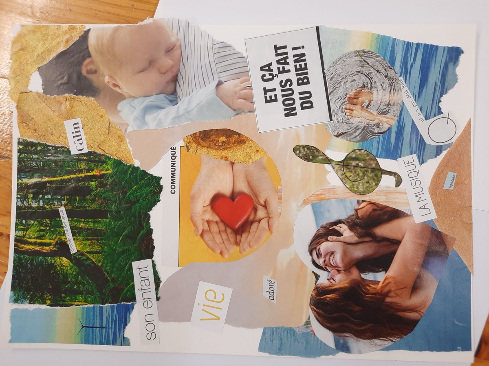
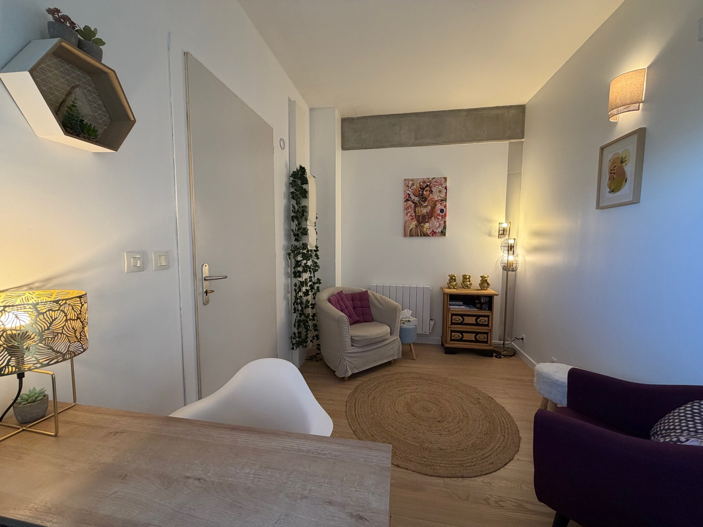
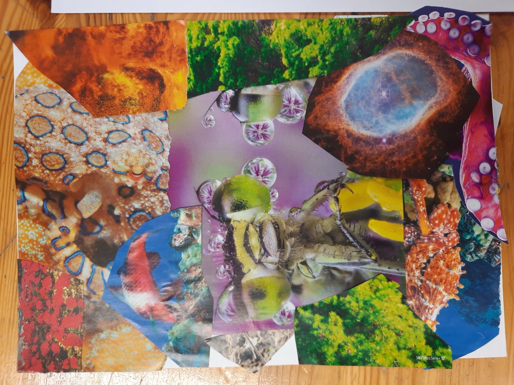

Ma pratique
Les accompagnements que je propose prennent en compte l'ensemble des dimensions de la personne : corporelle, psychique, relationnelle et émotionnelle.
L'approche
La Psychosomatique Relationnelle
Ma pratique s'appuie sur la Psychosomatique Relationnelle (PSR), approche fondée par Sami-Ali, qui considère le corps, le psychisme et la relation comme un ensemble indissociable. Elle s'intéresse en particulier aux sensations corporelles, aux émotions et à l'imaginaire, en lien avec votre histoire, permettant de mieux comprendre vos souffrances et de vous réapproprier votre corps et votre vécu.
À la psychothérapie en cabinet, j'associe des médiations corporelles qui s'inscrivent dans le cadre de la Psychosomatique Relationnelle et viennent soutenir le travail d'élaboration, sous différentes formes.

Le travail du rêve
Le travail du rêve occupe une place importante dans ma pratique. Dans une approche psychosomatique relationnelle, le rêve est une activité créatrice, une mise en forme du corps, de l'affect et de la relation, qui permet de savoir comment vous existez dans vos liens aux autres et au monde. Ce qui compte n'est pas seulement de donner du sens au rêve, mais d'observer ce qui, d'un rêve à l'autre, se répète, se transforme ou se déplace.
Raconté en séance, le rêve poursuit son travail dans la relation : il devient matière à association, au même titre que la parole ou la production artistique, et ouvre des voies de symbolisation qui n'étaient pas accessibles autrement.

La médiation corporelle
La médiation corporelle propose un travail de prise de contact avec le corps et ses sensations, à travers des parcours guidés. Contrairement à une démarche de détente ou de gestion du stress, ce travail s'ancre dans la conception du corps développée par Sami-Ali : le corps y est entendu comme lieu d'expression de votre histoire.
Il peut également prendre la forme d'une mise en mouvement : donner une forme corporelle à une émotion, à un événement de vie, pour permettre à ce qui ne trouve pas encore de mots de se donner à voir autrement.

La médiation artistique
La médiation artistique — peinture, argile, dessin, collage — offre un support pour donner forme à ce qui se joue en vous. Le geste, la matière et la production qui en résulte deviennent matière à élaboration et autant d'éléments à explorer et à mettre en lien avec votre histoire.
La production qui en résulte est reprise avec vous, en séance, comme on reprendrait le récit d'un rêve : un matériau à interroger ensemble, qui peut faire émerger des associations, des souvenirs ou des affects qui n'étaient pas accessibles par la seule parole.
La marche thérapeutique
La marche thérapeutique associe le travail thérapeutique aux bienfaits de la nature et de la marche : les sens sollicités par l'environnement — sons, odeurs, rythme des pas — apaisent la tension nerveuse et ouvrent un espace propice à l'élaboration.
Le contact avec le concret du dehors permet aussi de se dégager un temps du seul discours intérieur, et offre un appui différent. Les marches se déroulent à Villeneuvette, pour des séances d'une heure.
À qui s'adressent les consultations ?
J'accompagne les adolescents (à partir de 11 ans) et les adultes, en individuel, ainsi que les futurs et jeunes parents dans la période périnatale — grossesse, naissance, premiers mois avec bébé.
Les motifs de consultation les plus courants
- Des manifestations corporelles : troubles du sommeil, tensions, somatisations
- Des vécus relationnels difficiles
- Des transitions ou nouvelles étapes de vie : accès à la parentalité, deuil, séparation
- Le besoin d'un espace d'écoute et d'élaboration
Contactez-moi
Vous pouvez me contacter ou prendre rendez-vous de la manière qui vous convient le mieux.
ou par téléphone : 06 95 10 37 29